Selamat datang di HKBP Sudirman Medan – Bersekutu dalam Kasih Kristus
Ibadah Minggu: Sesi I 06.00 WIB (Batak) · Sesi II 08.00 WIB (Indonesia) · Sesi III 10.30 WIB (Remaja/Bahasa) · Sesi IV 17.00 WIB (Pemuda)
Sampaikan permohonan doa syafaat dan ikuti partangiangan sektor
Liturgi Lutheran berasaskan firman Tuhan dan kidung Buku Ende HKBP
Salurkan persembahan kasih untuk pelayanan yatim piatu dan lansia
Konseling pastoral, katekisasi sidi, dan administrasi warga jemaat
Sebagai bagian dari Huria Kristen Batak Protestan (HKBP) yang berdiri sejak 1861, jemaat HKBP Sudirman Medan terus bertekad menjadi gereja yang inklusif, setia pada warisan iman para reformator, dan aktif mewujudkan keadilan sosial bagi sesama.
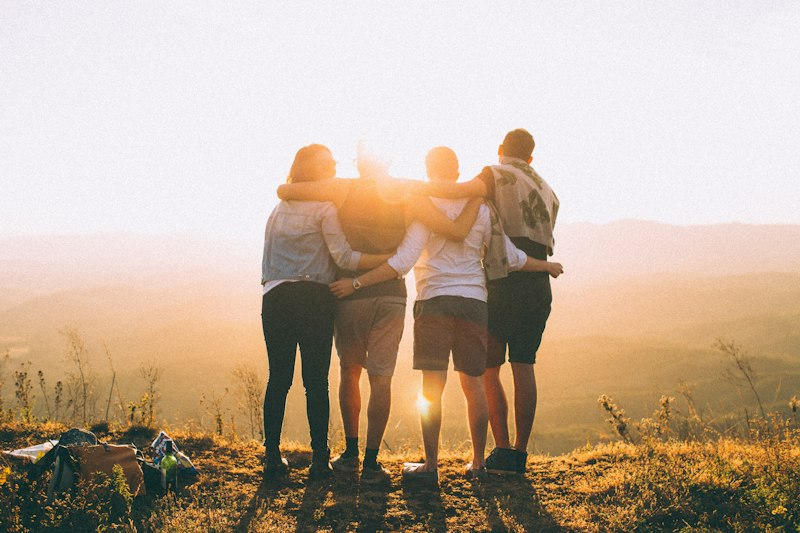
HKBP berakar dari pelayanan misi Dr. Ingwer Ludwig Nommensen sejak 1861 di Silindung Tarutung, dan kini bertumbuh menjadi sinode gereja terbesar di Indonesia dan Asia Tenggara dengan lebih dari 5 juta jemaat yang setia memuliakan Tuhan.
We are rooted in the rich liturgical tradition while embracing modern inclusivity, community advocacy, and genuine spiritual inquiry.
Melalui seksi kategorial Sekolah Minggu, Remaja, Naposobulung (Pemuda), Ina (Kaum Ibu), dan Ama (Kaum Bapak), setiap anggota jemaat diperlengkapi untuk bersaksi dan menjadi teladan kebajikan di Kota Medan dan sekitarnya.
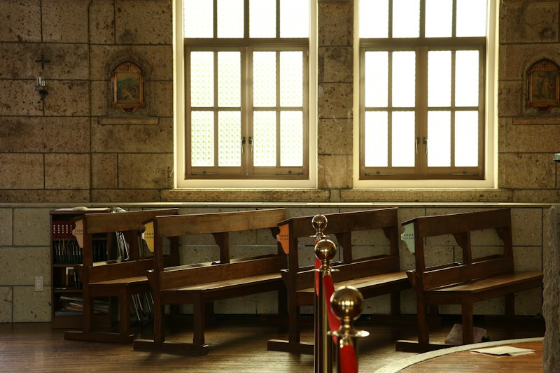
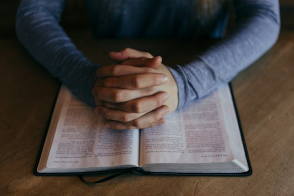
Engaging liturgy, classical choral hymns, and contemplative prayer.
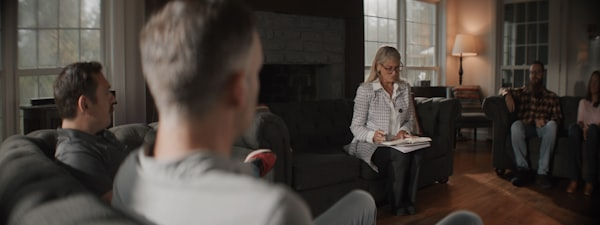
Midweek circles meeting for dinner, bible reflection, and caring fellowship.
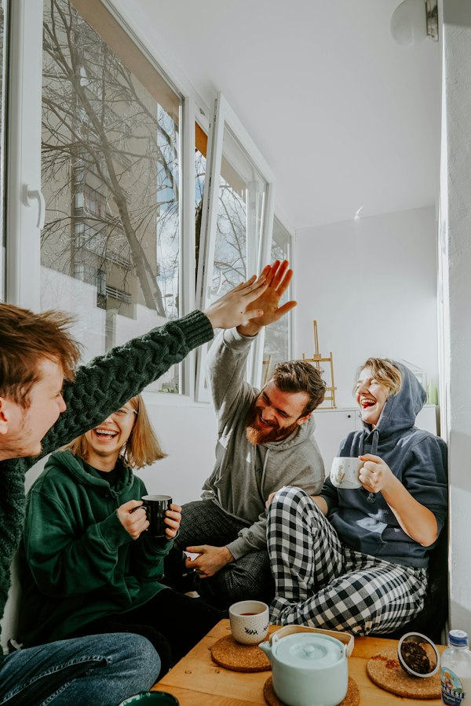
Theological seminars, book clubs, and social justice ministry teams.
Sunday school, youth rallies, outdoor camping, and mentorship programs.
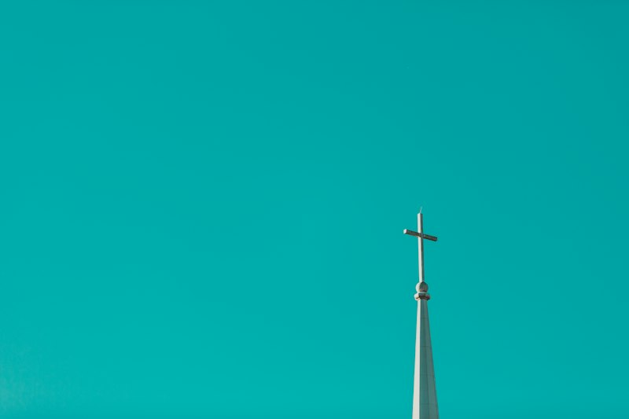
"Neither death, nor life, nor angels, nor rulers, nor things present, nor things to come, nor powers, nor height, nor depth, nor anything else in all creation, will be able to separate us from the love of God in Christ Jesus our Lord."ROMANS 8: 38-39
Lutheran Church is now live streaming Church Services through the our YouTube channel and can be viewed below. Join us every Sunday at 10:00 AM EST.
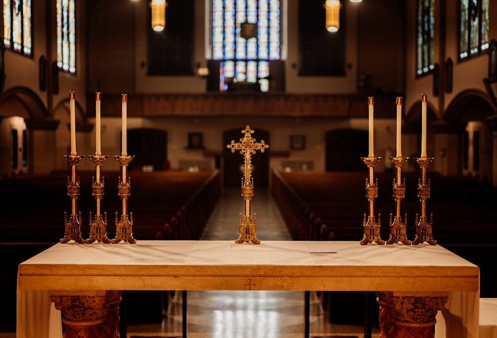
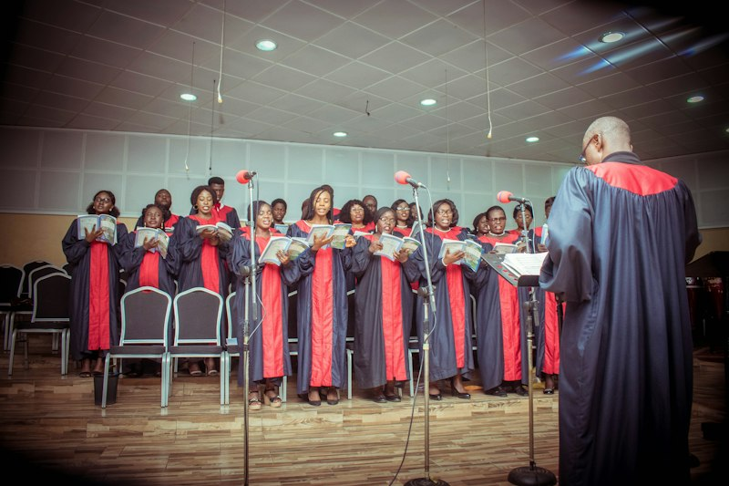
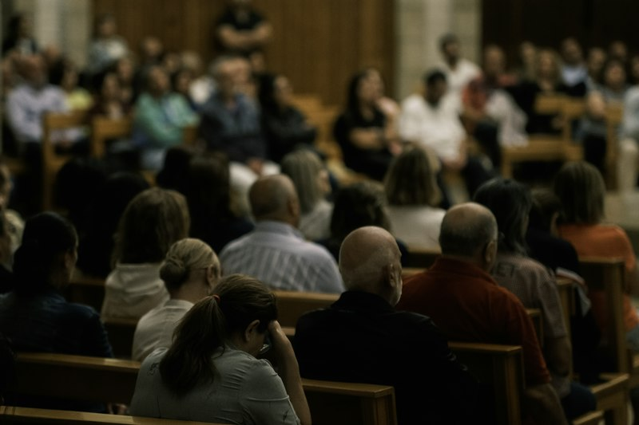
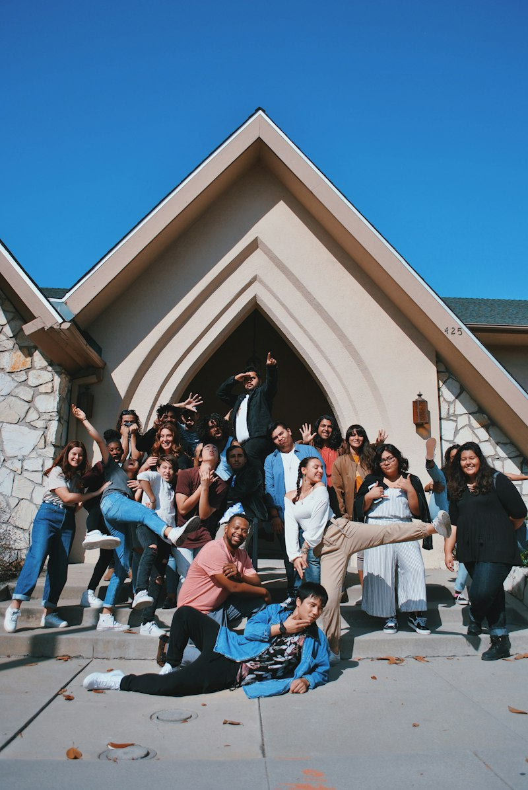
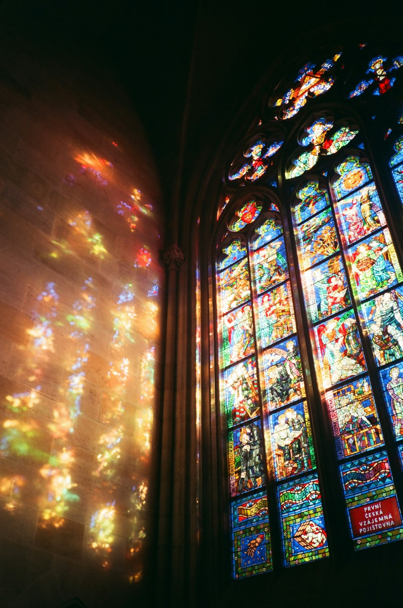
We are an entirely self-funded ministry. Your donations are 100% tax-deductible to support our transformational work every day in our local sanctuary and community outreach.
Your partnership empowers us to spread Christ's hope and compassion, making a meaningful difference.
Your contribution is more than a donation; it's an investment in the potential of young minds, fostering a cycle of empowerment.
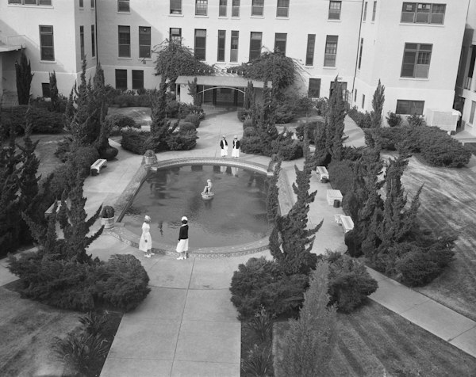
Your donation isn't just a financial contribution; it's a commitment to nurturing a community where education and healthcare thrive.
Together, let's make a meaningful impact by providing essential assistance and fostering a brighter, more secure future for families in need.
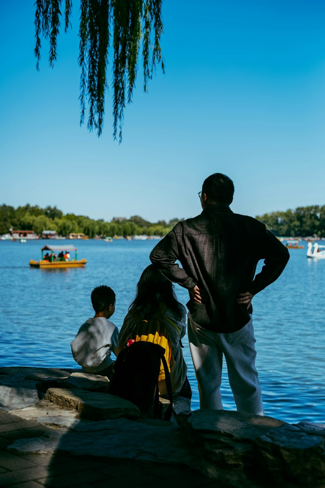
In times of rapid cultural change, the essential calling of the congregation remains clear: gospel proclamation, intentional community, hospitality to the stranger, and patient prayer.
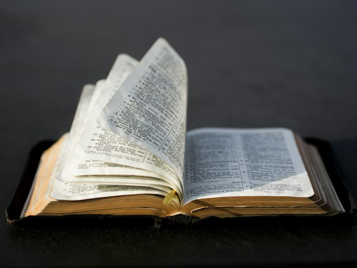